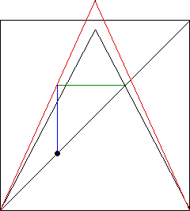

|  |  |
| On the right we see the tent map increased to this s-value, so one iterate goes to the fixed point of the original tent map. Note this is not the fixed point of the modified (red) tent map. | |||
| Now we return s to its original value, and we are very close to the fixed point. | |||
| Almost surely, we are not exactly at the fixed point, so because the fixed point is unstable, further iterates will move away from the fixed point. | |||
| |||
| Click either picture to see the consequence of slightly missing the fixed point. |